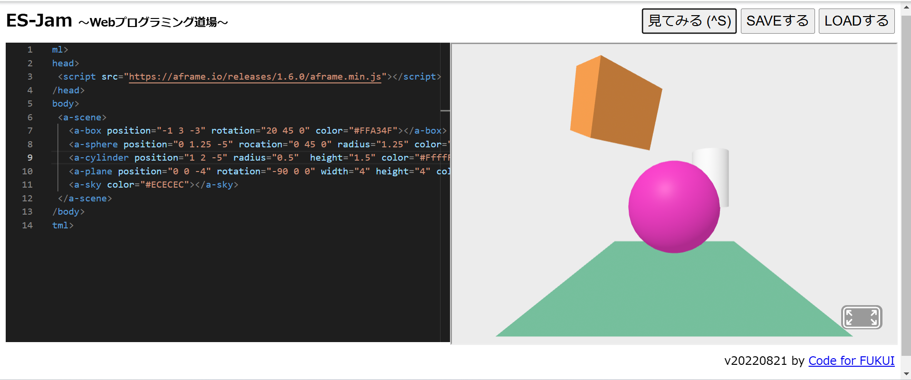
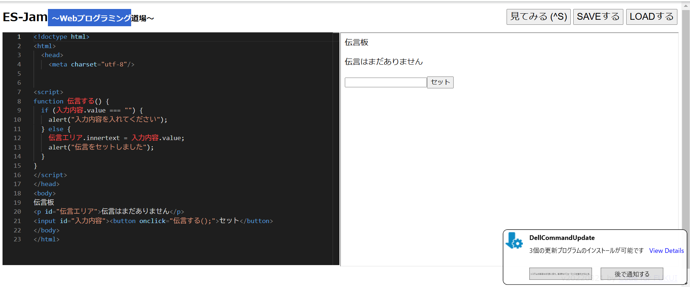

第3週目
3-1 JavaScript体験：VR空間を作る
自作した３次元空間
1.内容
javascriptによってvr空間を作った．コードによって，モノの位置や大きさなどを変えることができる．
2.感想
VR空間の自由度の高さを見くびっていたな，と思った．
javascriptによってvr空間を作った．コードによって，モノの位置や大きさなどを変えることができる．
2.感想
VR空間の自由度の高さを見くびっていたな，と思った．
3-2 JavaScript体験：伝言プログラムを作る
伝言板
1.内容
javasvriptで，伝言を残せるホームページを作った． 2.感想
準備のために枠や変数を用意する段階，プログラムで文字を出したり消したりする段階など，いくつかの段階に分けることが重要だなと思った
javasvriptで，伝言を残せるホームページを作った． 2.感想
準備のために枠や変数を用意する段階，プログラムで文字を出したり消したりする段階など，いくつかの段階に分けることが重要だなと思った
3-3 JavaScriptプログラムの３次元空間の体験

1.内容
javascriptで作られた三次元空間を体験した．自分で物の位置をかえたり，反射するボールを売ったりすることができる
2.感想
3-1での体験と合わせて，この体験でvrゲームなどの仕組みがなんとなくわかった
javascriptで作られた三次元空間を体験した．自分で物の位置をかえたり，反射するボールを売ったりすることができる
2.感想
3-1での体験と合わせて，この体験でvrゲームなどの仕組みがなんとなくわかった